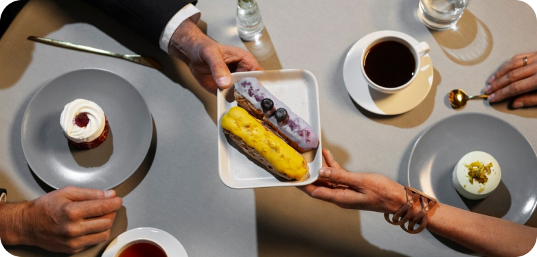
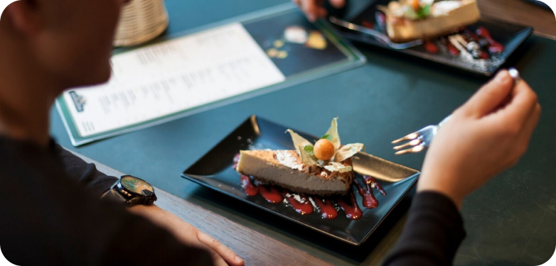

Our Blog
Explore the transformative role of catering in elevating event experiences and creating unforgettable moments for guests. From exquisite culinary creations to impeccable service, discover how catering services contribute to the overall ambiance and success of any event.
1. Setting the Tone: Delve into how catering sets the tone for an event, whether it's a formal gala, intimate wedding, or corporate conference. From elegant table settings to carefully curated menus, catering sets the stage for the entire event experience.
2. Culinary Creativity: Discover the artistry behind culinary creations designed to tantalize the taste buds and leave a lasting impression. From innovative flavor combinations to visually stunning presentations, catering brings creativity to the table, transforming meals into culinary works of art.
3. Tailored Experiences: Learn how catering services can be tailored to suit the unique needs and preferences of each event. Whether it's accommodating dietary restrictions, incorporating cultural traditions, or designing themed menus, catering adds a personal touch to every occasion.
4. Interactive Elements: Explore the trend of interactive dining experiences that engage guests and create memorable moments. From live cooking stations to interactive dessert bars, catering goes beyond the plate to provide immersive culinary experiences that leave a lasting impact.
5. Attention to Detail: Appreciate the meticulous attention to detail that goes into every aspect of catering, from menu planning to execution. From flawless service to seamless coordination, catering professionals ensure that every detail is thoughtfully considered to enhance the overall guest experience.
6. Creating Connections: Recognize the role of catering in fostering connections and building relationships among event attendees. Whether it's over a shared meal or during a networking reception, catering facilitates meaningful interactions that enhance the overall event experience.
7. Unforgettable Impressions: Explore how exceptional catering leaves a lasting impression on guests, elevating their overall event experience and leaving them with fond memories. From signature cocktails to decadent desserts, catering creates moments that guests will cherish long after the event concludes.
8. Reflecting Brand Identity: Understand how catering can reflect and reinforce the brand identity of an organization or individual hosting the event. From corporate branding incorporated into menu design to personalized touches that reflect the host's personality, catering helps convey a cohesive message and create a memorable brand experience.
9. Enhancing Atmosphere: Experience how catering contributes to the overall ambiance and atmosphere of an event, whether it's an intimate gathering or a grand celebration. From ambient lighting to curated music playlists, catering works in harmony with other elements to create a multi-sensory experience that captivates guests.
10. Celebrating Special Occasions: Celebrate the role of catering in commemorating life's special moments, from weddings and milestone birthdays to anniversary celebrations and corporate achievements. Catering transforms these occasions into unforgettable experiences, bringing people together to share in moments of joy and celebration.
